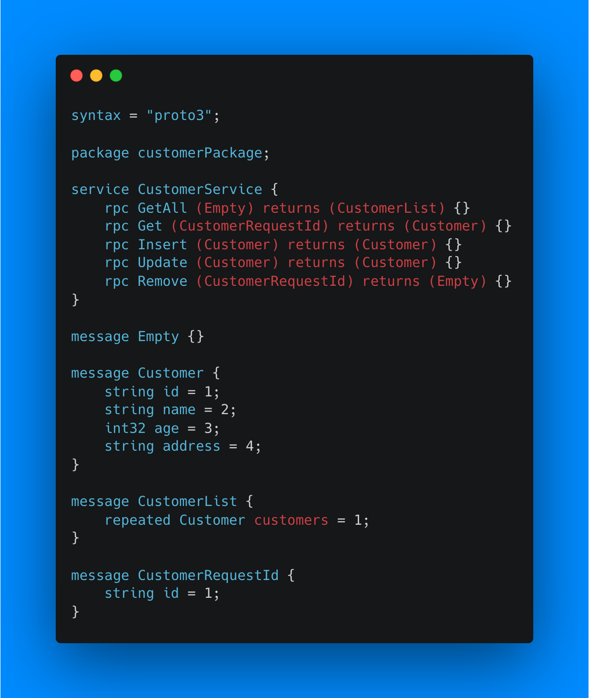

Microservices
Shayan Karimi
Microservice Benefits
* Seperation of concerns
* Smaller projects to deal with
* More scaling and deployment options
Pitfalls of microservices
* Illogical splitting
* More network interactions
* Data storing and sharing
* Compatibillity issues
* Testing

Communication
* REST
* gRPC (Google Remote Procedure Call
gRPC

* Protocol Buffers

* Endpoints ???

API Gateway

More